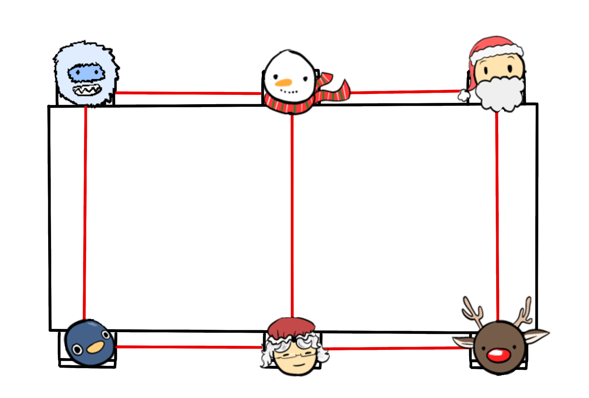
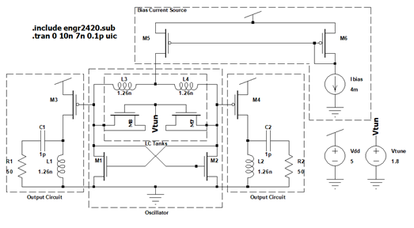
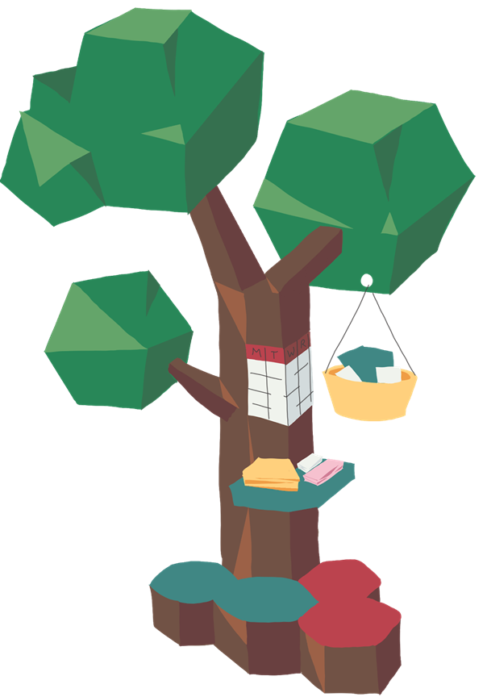

Fall 2020
Summary
After learning about graph theory in discrete math, we chose to build a website that surveys a group of people then generates a seating arrangement that either maximizes or minimizes the possibility for a chaotic dinner. Perfect for the holidays if you want things to be peaceful (or not) with your loved ones! You can try it out on the project website!
Learn More

Summary
For a final project in computer architecture, we simulated a processor implementing the full MIPS instruction set. Read the whole story on the project website!
Learn More
Spring 2020
Summary
We simulated a voltage controlled oscillator (VCO) in SPICE then analyzed the output for a final project in our microelectronic circuits class. We chose this project to take all we had learned about MOS transistor electronics and put it to practical use. A VCO takes a voltage as input and produces a waveform of a frequency dependent on the input voltage. It is useful for a variety of things, including modulation for wireless communication. This was one of the first of several projects done during the odd 2020 semesters.

Summary
UOCD is class about people, not engineers. We spent 3 months learning all about what makes our user group "tick". A user group, in our case librarians, is a group of people with something in common, and we eventually proposed something that would make their lives easier. We settled on reimagining the bulletin board into a more inviting tree shape. This helps librarians do what they love most: helping and greeting people!
